Prediksi Kemacetan Kota

Memahami bagaimana sistem AI mengenali pola data historis dan membuat prediksi berdasarkan pola tersebut. Praktikum ini menekankan pada konsep pola berulang dalam dataset, penggunaan statistik sederhana (rata-rata), dan cara AI mengekstrak informasi untuk prediksi tanpa harus memprogram algoritma kompleks.
Tombol "Mulai Percobaan" hanya dapat digunakan setelah kamu membuka Tujuan Praktikum dan Cara Penggunaan.
Perhatikan tabel jumlah kendaraan selama 30 hari terakhir. Setiap baris menunjukkan jam, sedangkan setiap kolom menunjukkan tanggal.
Cobalah menemukan waktu ketika kendaraan paling ramai atau paling sepi.
Gunakan menu Pilih Hari untuk menentukan hari yang ingin kamu prediksi.
Setiap hari memiliki pola lalu lintas yang berbeda.
Pilih jam yang ingin dianalisis oleh sistem AI.
Cuaca dapat memengaruhi jumlah kendaraan di jalan.
Gunakan slider untuk menentukan jumlah kendaraan yang dianggap macet.
Klik tombol Jalankan Prediksi Kemacetan Kota oleh AI.
Sistem akan menampilkan kondisi lalu lintas dan rekomendasi perjalanan.
Nama Jeremia Reinnatal, S.Pd.
Instansi SMP Negeri 150 Jakarta
Email jeremiareinnatal02@guru.smp.belajar.id
Direktorat Jenderal Pendidikan Anak Usia Dini, Pendidikan Dasar, dan Pendidikan Nonformal dan Informal
Direktur SMP Maulani Mega Hapsari, S.IP, M.A.
Kasubag Tata Usaha Direktorat SMP Roelly Herdyanto, S.E., M.Si.
Pejabat Pembuat Komitmen Cepy Lukman Rusdiana, S.Kom., M.Si.